Centos8集群Slurm作业管理系统安装（三）
slurm的安装和配置
slurm的简介
Slurm 任务调度工具（前身为极简Linux资源管理工具，英文：Simple Linux Utility for Resource Management，取首字母，简写为SLURM），或 Slurm，是一个用于 Linux 和 Unix 内核系统的自由开源的任务调度工具，被世界范围内的超级计算机和计算机群广泛采用。它提供了三个关键功能。第一，为用户分配一定时间的专享或非专享的资源(计算机节点)，以供用户执行工作。第二，它提供了一个框架，用于启动、执行、监测在节点上运行着的任务(通常是并行的任务，例如 MPI)，第三，为任务队列合理地分配资源。
大约60％的500强超级计算机上都运行着Slurm，包括2016年前世界上最快的计算机天河-2。
其为超算提供了三个关键功能：
- 为用户分配一定时间的专享或非专享的资源，来执行任务
- 提供了用于启动、执行、监测在节点上运行的任务的框架
- 为任务队列合理地分配计算资源
slurm的架构
在slurm计算集群系统，众多节点将会分为master节点（主节点/管控节点），compute节点（计算节点）以及部分集群会有client节点（登录节点），它专门用来给用户执行各种作业调度与资源部署的指令，但多数情况是client节点和master节点部署在同一个节点上以简化部署。slurm包含四种服务（守护进程），在各个节点上有不同的部署分布：
- slurmctld服务：只运行于master节点，作为中心管理器用于监测资源和任务
- slurmd服务，主要运行于compute节点，作用是接收调度，承担实际的计算负载
- slurmdbd数据库服务，通常运行于master节点，可以将多个slurm管理的集群的记账信息记录在同一个数据库中
- slurmrestd服务，通常运行于master节点，用来提供REST API与Slurm进行交互
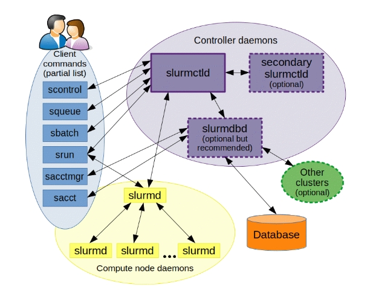
创建slurm账户，并且保证所有节点一致
export SLURM_USER=2025 |
所有节点安装相关的依赖
yum -y install python3 readline-devel pam-devel perl-ExtUtils-MakeMaker mailx |
控制节点安装 slurm
- 先去官网下载相应的安装包，我下载的是 slurm-23.11.5.tar.bz2，并上传，然后生成rpm包。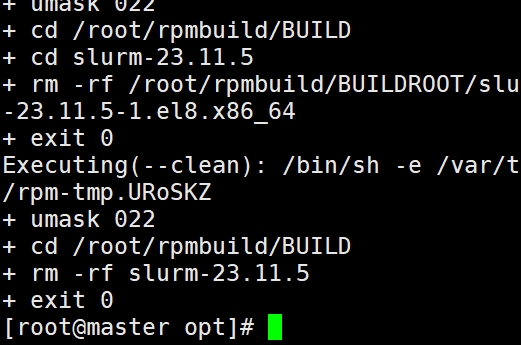
rpmbuild -ta --clean slurm-23.11.5.tar.bz2
- 安装slurm
cd /root/rpmbuild/RPMS/x86_64
yum localinstall slurm-*
复制rpm包到共享区，用于计算节点的安装
mkdir /opt/slurm_dir
cp slurm-* /opt/slurm_dir
计算节点安装 slurm
#计算节点只需要安装 |
修改文件和相应的权限
- 控制节点
创建配置文件
slurmdbd.conf文件为slurmdbd服务的配置文件，所有者必须为slurm用户
cp /etc/slurm/slurmdbd.conf.example /etc/slurm/slurmdbd.conf
chown -R slurm:slurm /etc/slurm/slurmdbd.conf
chmod -R 600 /etc/slurm/slurmdbd.conf
slurm.conf文件为slurmd、slurmctld的配置文件，所有者必须为root用户
cp /etc/slurm/slurm.conf.example /etc/slurm/slurm.conf
chown -R root:root /etc/slurm/slurm.conf
cgroup.conf文件配置默认即可
cp /etc/slurm/cgroup.conf.example /etc/slurm/cgroup.conf
chown -R root:root /etc/slurm/cgroup.conf
建立slurmctld服务存储其状态等的目录，由slurm.conf中StateSaveLocation参数定义：
mkdir /var/spool/slurmctld
chown -R slurm:slurm /var/spool/slurmctld
chmod -R 755 /var/spool/slurmctld
建立日志文件存储目录，并修改目录权限
mkdir /var/log/slurm
touch /var/log/slurm/{slurmd,slurmctld,slurmdbd}.log
chown -R slurm:slurm /var/log/slurm
chmod -R 755 /var/log/slurm
建立slurmd服务目录
mkdir /var/spool/slurmd
chown -R root:root /var/spool/slurmd
chmod -R 755 /var/spool/slurmd
创建pid文件并设置权限
touch /var/run/slurmdbd.pid
chown slurm:slurm /var/run/slurmdbd.pid
chmod 755 /var/run/slurmdbd.pid - 计算节点
mkdir -pv /etc/slurm
mkdir -pv /var/spool/slurmd
mkdir -pv /var/log/slurm
touch /var/log/slurm/slurmd.log && chown -R slurm:slurm /var/log/slurm && chmod -R 755 /var/log/slurm - 控制节点修改 slurmdbd的 slurmdbd.conf 配置文件，可以参考：022-日常研究之Slurm部署文档，以下是我的配置文件
vi /etc/slurm/slurmdbd.conf
# Example slurmdbd.conf file.
# See the slurmdbd.conf man page for more information.
# Archive info
ArchiveJobs=yes
ArchiveDir="/tmp"
ArchiveSteps=yes
ArchiveScript=
JobPurge=12
StepPurge=1
# Authentication info
AuthType=auth/munge
AuthInfo=/var/run/munge/munge.socket.2
# slurmDBD info
DbdAddr=172.16.34.127
DbdHost=master
DbdPort=7031
SlurmUser=slurm
MessageTimeout=300
DebugLevel=verbose
DefaultQOS=normal,standby
LogFile=/var/log/slurm/slurmdbd.log
PidFile=/var/run/slurmdbd.pid
PluginDir=/usr/lib/slurm
PrivateData=accounts,users,usage,jobs
TrackWCKey=yes
# Database info
StorageType=accounting_storage/mysql
StorageHost=172.16.34.127
StoragePort=1234
StoragePass=123456
StorageUser=slurm
StorageLoc=slurm_acct_db - 控制节点修改slurmd和slurmctld的配置文件slurm.conf，可以参考：022-日常研究之Slurm部署文档，或者使用官方的生成工具，以下是我的配置文件
vi /etc/slurm/slurm.conf
slurm.conf file generated by configurator.html.
Put this file on all nodes of your cluster.
See the slurm.conf man page for more information.
ClusterName=cluster
SlurmctldHost=master
SlurmctldHost=
#DisableRootJobs=NO
EnforcePartLimits=NO
Epilog=
EpilogSlurmctld=
FirstJobId=1
MaxJobId=67043328
GresTypes=
GroupUpdateForce=0
GroupUpdateTime=600
JobFileAppend=0
JobRequeue=1
JobSubmitPlugins=lua
KillOnBadExit=0
LaunchType=launch/slurm
Licenses=foo*4,bar
MailProg=/bin/mail
MaxJobCount=10000
MaxStepCount=40000
MaxTasksPerNode=512
MpiDefault=
MpiParams=ports=#-#
PluginDir=
PlugStackConfig=
PrivateData=jobs
ProctrackType=proctrack/cgroup
Prolog=
PrologFlags=
PrologSlurmctld=
PropagatePrioProcess=0
PropagateResourceLimits=
PropagateResourceLimitsExcept=
RebootProgram=
ReturnToService=1
SlurmctldPidFile=/var/run/slurmctld.pid
SlurmctldPort=6817
SlurmdPidFile=/var/run/slurmd.pid
SlurmdPort=6818
SlurmdSpoolDir=/var/spool/slurmd
SlurmUser=slurm
SlurmdUser=root
SrunEpilog=
SrunProlog=
StateSaveLocation=/var/spool/slurmctld
SwitchType=
TaskEpilog=
TaskPlugin=task/affinity,task/cgroup
TaskProlog=
TopologyPlugin=topology/tree
TmpFS=/tmp
TrackWCKey=no
TreeWidth=
UnkillableStepProgram=
UsePAM=0
#
TIMERS
BatchStartTimeout=10
CompleteWait=0
EpilogMsgTime=2000
GetEnvTimeout=2
HealthCheckInterval=0
HealthCheckProgram=
InactiveLimit=0
KillWait=30
MessageTimeout=10
ResvOverRun=0
MinJobAge=300
OverTimeLimit=0
SlurmctldTimeout=120
SlurmdTimeout=300
UnkillableStepTimeout=60
VSizeFactor=0
Waittime=0
#
SCHEDULING
DefMemPerCPU=0
MaxMemPerCPU=0
SchedulerTimeSlice=30
SchedulerType=sched/backfill
SelectType=select/cons_tres
#
JOB PRIORITY
PriorityFlags=
PriorityType=priority/multifactor
PriorityDecayHalfLife=
PriorityCalcPeriod=
PriorityFavorSmall=
PriorityMaxAge=
PriorityUsageResetPeriod=
PriorityWeightAge=
PriorityWeightFairshare=
PriorityWeightJobSize=
PriorityWeightPartition=
PriorityWeightQOS=
#
LOGGING AND ACCOUNTING
AccountingStorageEnforce=0
AccountingStorageHost=
AccountingStoragePass=
AccountingStoragePort=
AccountingStorageType=
AccountingStorageUser=
AccountingStoreFlags=
JobCompHost=master
JobCompLoc=slurm_jobcomp_db
JobCompParams=
JobCompPass=123456
JobCompPort=3306
JobCompType=jobcomp/mysql
JobCompUser=slurm
JobContainerType=
JobAcctGatherFrequency=30
JobAcctGatherType=
SlurmctldDebug=info
SlurmctldLogFile=/var/log/slurm/slurmctld.log
SlurmdDebug=info
SlurmdLogFile=/var/log/slurm/slurmd.log
SlurmSchedLogFile=
SlurmSchedLogLevel=
DebugFlags=
#
POWER SAVE SUPPORT FOR IDLE NODES (optional)
SuspendProgram=
ResumeProgram=
SuspendTimeout=
ResumeTimeout=
ResumeRate=
SuspendExcNodes=
SuspendExcParts=
SuspendRate=
SuspendTime=
#
COMPUTE NODES
NodeName=node1 CPUs=4 Boards=1 SocketsPerBoard=1 CoresPerSocket=4 ThreadsPerCore=1 RealMemory=1778
PartitionName=compute Nodes=node1 Default=YES MaxTime=INFINITE State=UP - 计算节点的信息可以获得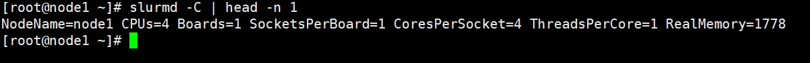
slurmd -C | head -n 1
- 复制 配置文件到计算节点，保证所有节点的配置文件一致
scp /etc/slurm/slurm.conf node1:/etc/slurm/
scp /etc/slurm/cgroup.conf node1:/etc/slurm/ - 修改 slurmctld.service，要添加maridb服务 使slurmctld服务在数据库服务之后启动
vim /lib/systemd/system/slurmctld.service
slurm的启动
控制节点
systemctl enable slurmdbd slurmctld |
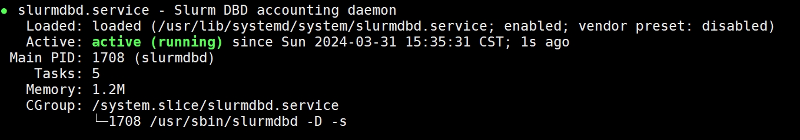
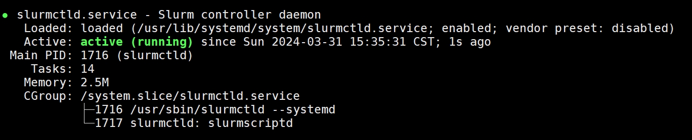
计算节点
systemctl enable slurmd |
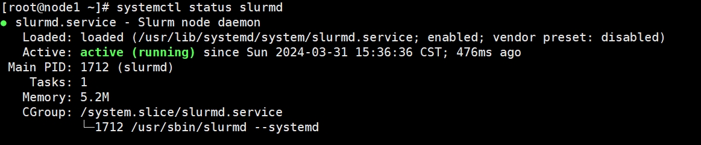
测试
- 查看节点状态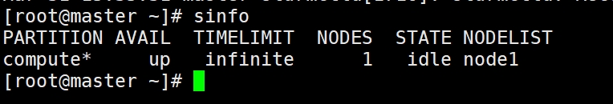
sinfo
- 查看节点信息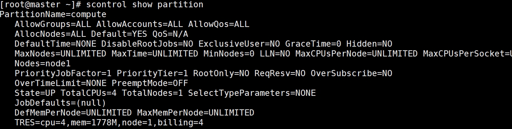
scontrol show partition
- 提交任务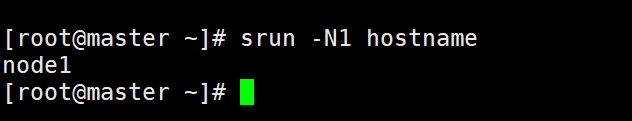
srun -N1 hostname
- 提交VASP的并行任务，可以参考：Centos8 stream安装 VASP 2024 Intel oneAPI
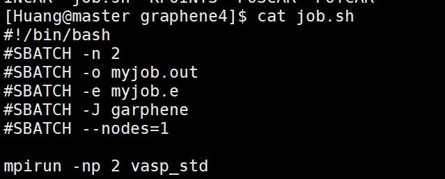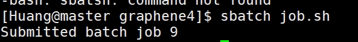sbatch job.sh
- 如果计算节点 状态为down，可以使用一下命令让其变为空闲（idle）状态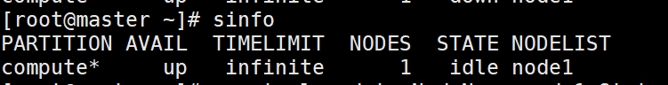
scontrol update NodeName=node1 State=RESUME
参考
本博客所有文章除特别声明外，均采用 CC BY-NC-SA 4.0 许可协议。转载请注明来自 哆啦酱的点心屋！
相关推荐


评论